12 competitor and reference sites + UX teardowns, analyzed for positioning, hero copy, CTA, pricing, and case-study structure — and what the Ledenov site should borrow.
| Site | Tier | Positioning | Primary CTA | Pricing |
|---|---|---|---|---|
| Designjoy designjoy.co | Solo / productized | "Design subscriptions for everyone" | See pricing / Book a call | ✅ $4,995/mo |
| Artone Studio artone.studio | Solo / productized | "Product design, websites & branding for startups. One monthly fee." | Book a Call | ✅ $4,000/mo |
| SaaS Designer saasdesigner.com | Solo / B2B SaaS | "Turn your B2B SaaS into an experience users love" | Book a UX/UI Discovery Call | partial |
| Simon McCade ★ simonmccade.com | Senior indie · B2B SaaS | "Let's fix your confusing user experience." | Book discovery call | day-rate |
| Oli Batstone ★ olibatstone.com | Senior indie · health | "You've built it. People just don't engage." | Book discovery call | no (scarcity) |
| UXIsaac uxisaac.com | Freelance · SaaS | "SaaS websites that turn your ICP into booked demos" | Book 15min Call | — |
| btsta btsta.me | Solo design-engineer | "Product design that ships" — embedded partner, not agency | Book a call (1 slot) | — |
| UI Flip uiflip.com | Solo vs agency | "Solo by design. Direct line, no agency layers." | Book a call | ✅ $6,000/mo |
| Anomaly byanomaly.co | Partner (small team) | "Design & Webflow partner for quality-obsessed founders" | Book a free intro call | ✅ weekly/fixed |
| Startup Design Partners startupdesignpartners.com | Design partner | "design cofounder / partner for founders" | (varies) | — |
| Rauno Freiberg rauno.me | Aesthetic ref only | Vercel interaction designer · manifesto site | email only | — |
| Paco Coursey paco.me | Aesthetic ref only | Linear webmaster · minimalist personal site | email only | — |
★ = closest analogues to Yev's exact positioning (independent senior product designer, problem-first, book-a-call).
Dark theme, single blue accent, work-forward. The cleanest expression of Yev's own pitch.
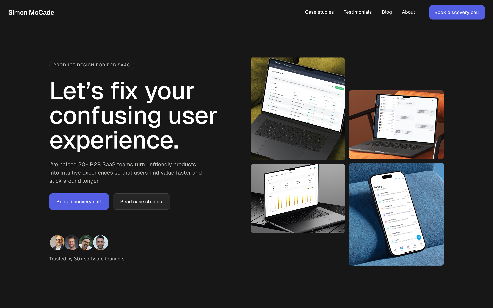
PRODUCT DESIGN FOR B2B SAAS — instant relevance filter.For Yev: borrow the eyebrow → problem-headline → outcome-subhead → dual-CTA → inline-proof stack. Differentiator: broader single-partner scope + the heavier $2M / 950 contracts proof.
Light theme, centered hero. Best example of the enterprise-logo framing the brief prescribes.
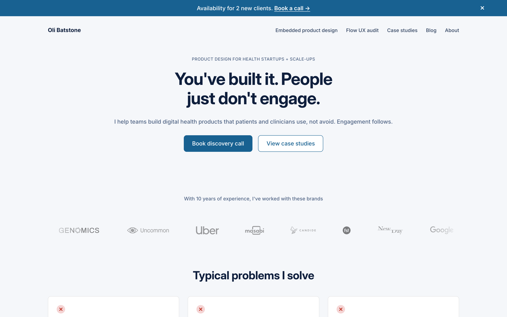
For Yev: adopt the "worked with these brands" label, the scarcity bar, and the "problems I solve" services framing.
/pricing with packages — show numbers or "starting at"?Aesthetic refs (craft only): Rauno Freiberg & Paco Coursey — reference-grade Linear/Vercel minimalism, no funnel. Study for typography, whitespace, motion polish; don't copy their no-CTA structure.
PRODUCT DESIGN FOR [SEGMENT]).No competitor combines elite Linear-grade minimalist craft (Rauno/Paco) with a tight book-a-call founder funnel (Simon/Oli). Craft sites have no funnel; funnel sites look templated. Yev's site can own that intersection — with $2M / 950-contract proof heavier than any analogue's "30+ teams," and a single-partner scope (product + site + brand) broader than the SaaS-only specialists.
PRODUCT DESIGN FOR FOUNDERS); problem-first headline; subhead = outcome + Upwork proof; dual CTA; inline avatars/"trusted by". — Simon McCade/pricing with packages; decide show-number vs "starting at". — productized tier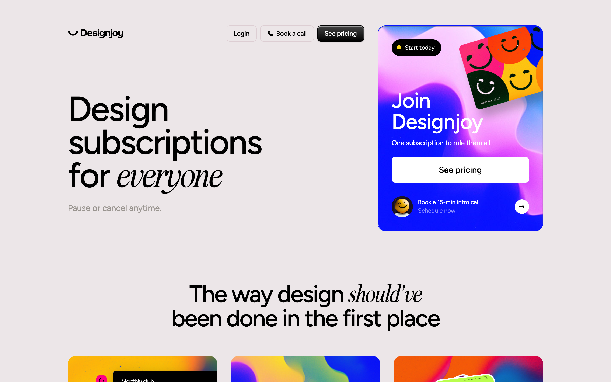
Designjoy productized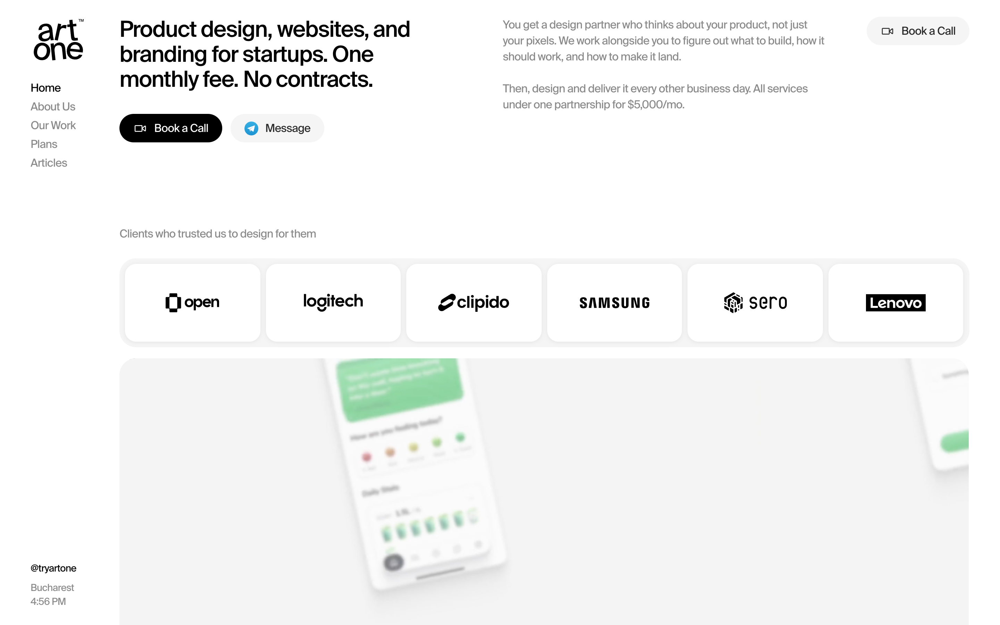
Artone Studio productized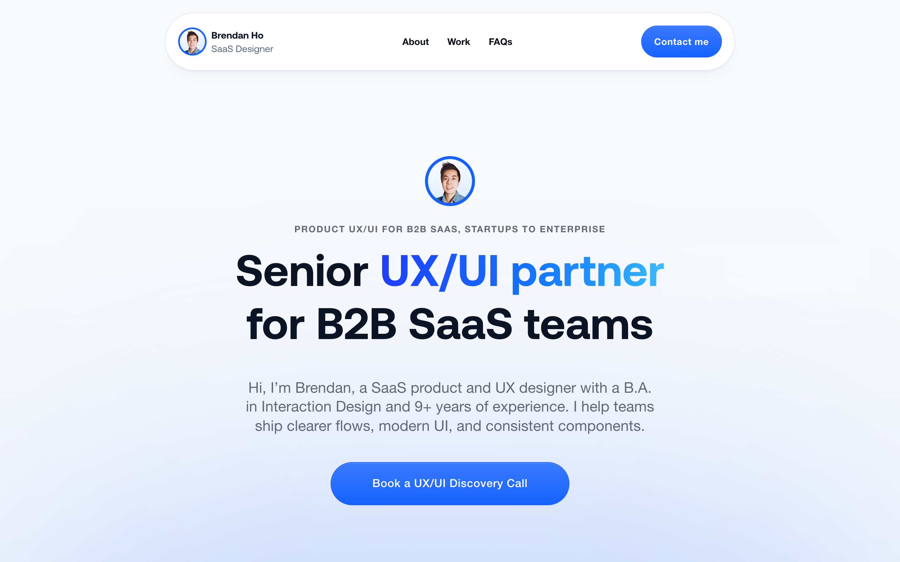
SaaS Designer SaaS Simon McCade closest Oli Batstone closest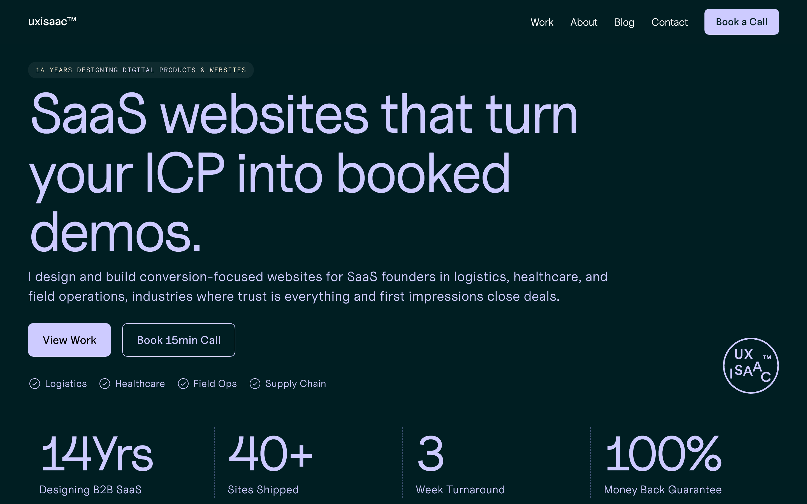
UXIsaac SaaS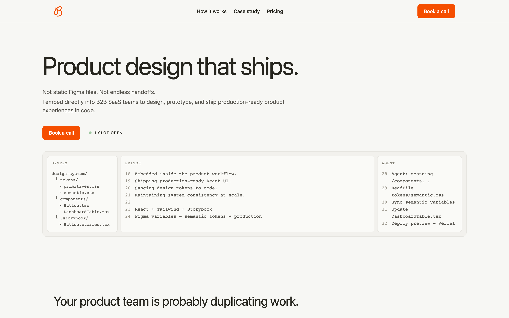
btsta design-eng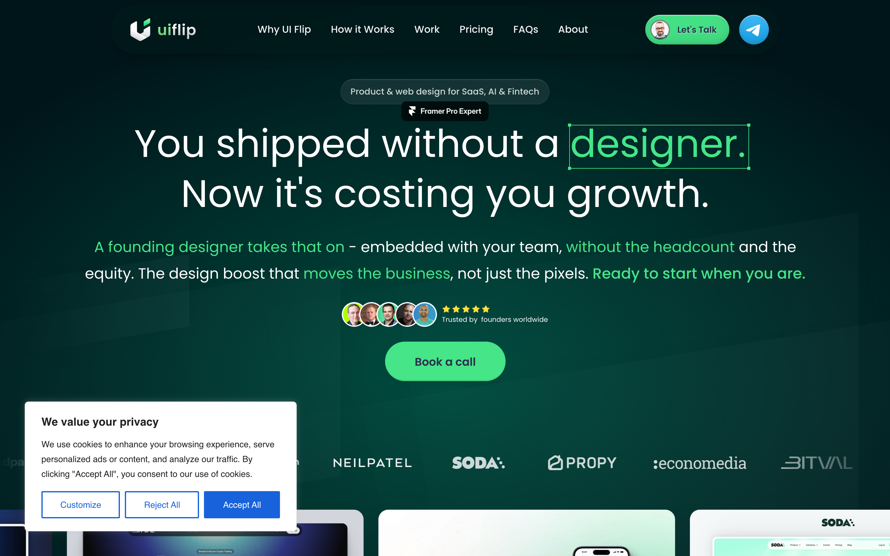
UI Flip solo vs agency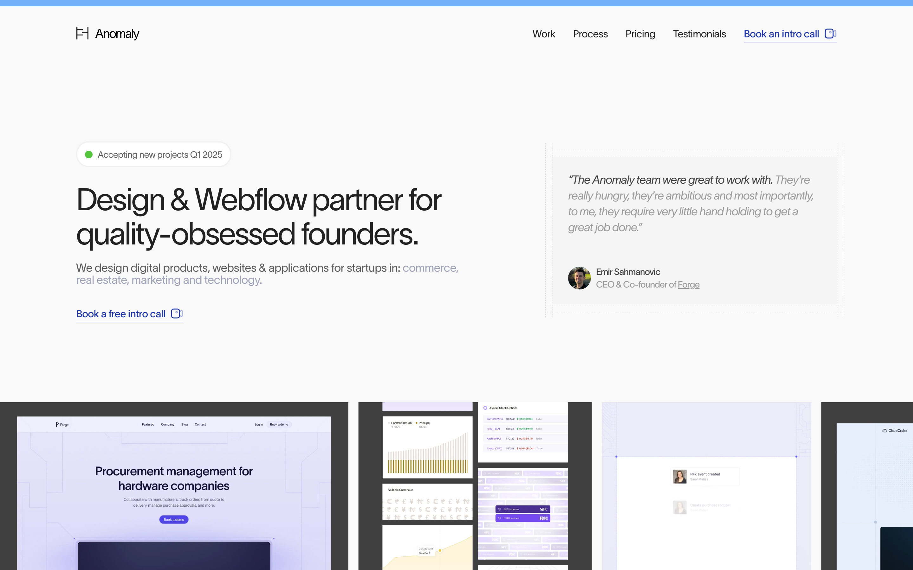
Anomaly partner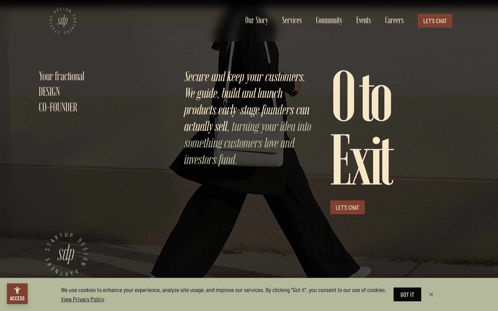
Startup Design Partners partner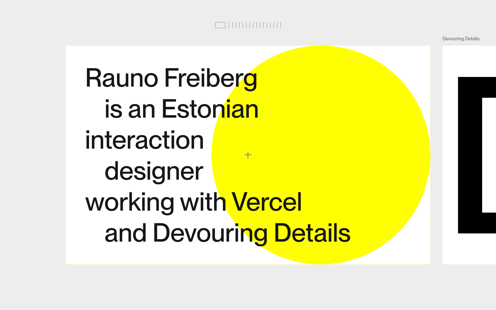
Rauno Freiberg aesthetic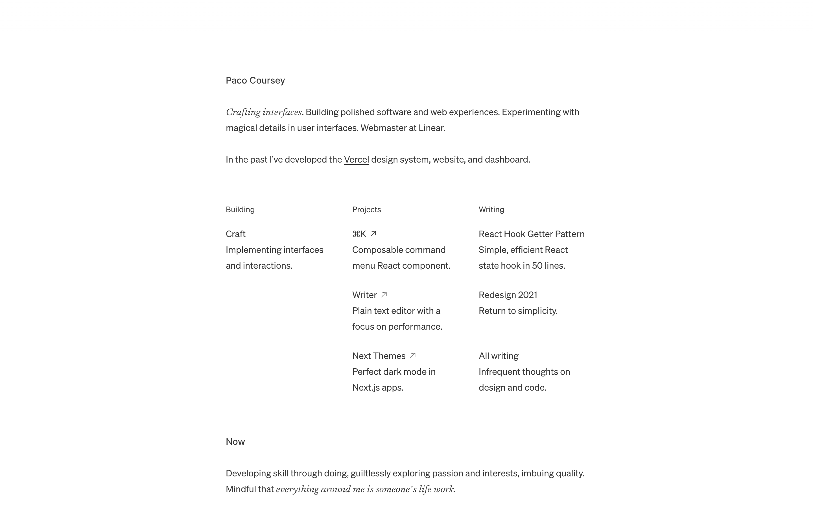
Paco Coursey aesthetic{kind=link}
{kind=link}
{kind=link}
{kind=link}
{kind=link}
{kind=link}
{kind=link}
{kind=link}
{kind=link}
{kind=link}
{kind=link}
{kind=link}